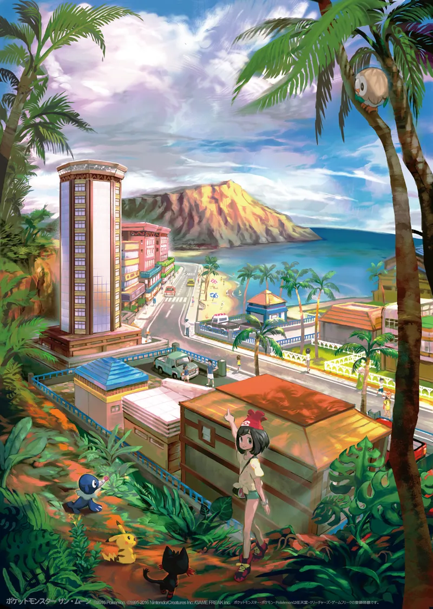
Ciudad Hauoli
La única ciudad de la isla Melemele. Tiene playa, tiendas y mucho turismo, y aquí empieza el viaje.
Generación 7 · Sol, Luna, Ultrasol y Ultraluna
Alola está en el océano, lejos de las demás regiones, y se inspira en Hawái. Son cuatro islas tropicales con playas, volcanes y una isla artificial: Melemele, Akala, Ula-Ula y Poni. La gente de Alola respeta mucho a los Pokémon guardianes de cada isla.
Pokémon Sol y Pokémon Luna salieron en 2016 y trajeron 81 Pokémon nuevos, las formas de Alola y los movimientos Z. Un año después llegaron Pokémon Ultrasol y Pokémon Ultraluna, con más historia.
En Alola no hay gimnasios. El viaje se llama el recorrido insular: hay que superar las pruebas de cada isla, vencer a los kahunas y, por último, a la Liga Pokémon, que se construye en esta región. Mientras, el Equipo Skull y la Fundación Æther complican las cosas.
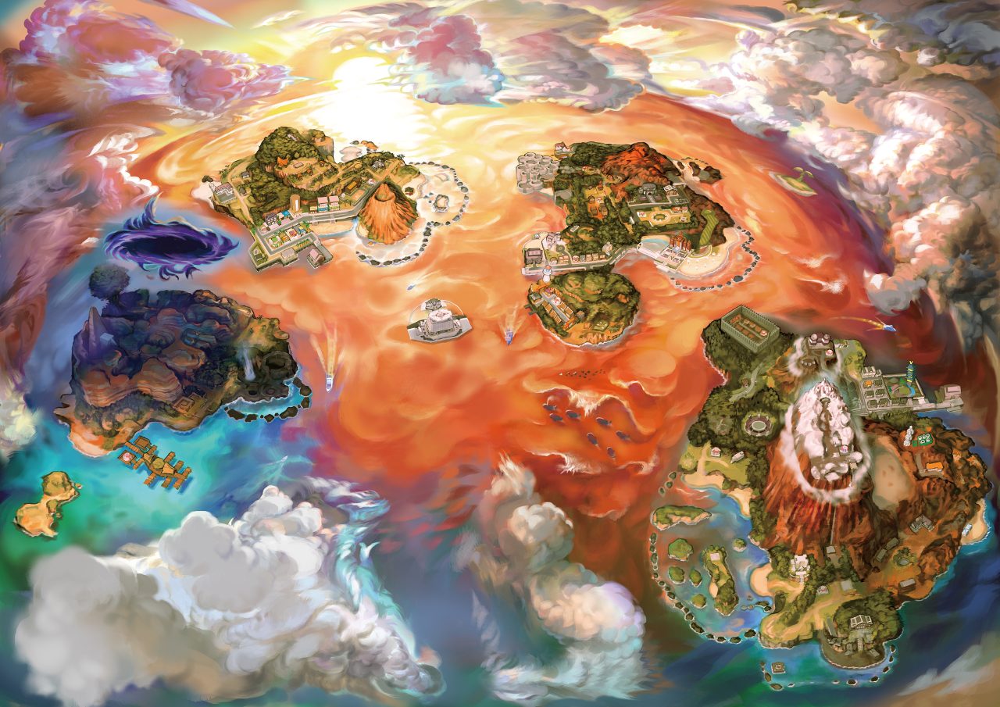
Mapa de la región de Alola.

La única ciudad de la isla Melemele. Tiene playa, tiendas y mucho turismo, y aquí empieza el viaje.
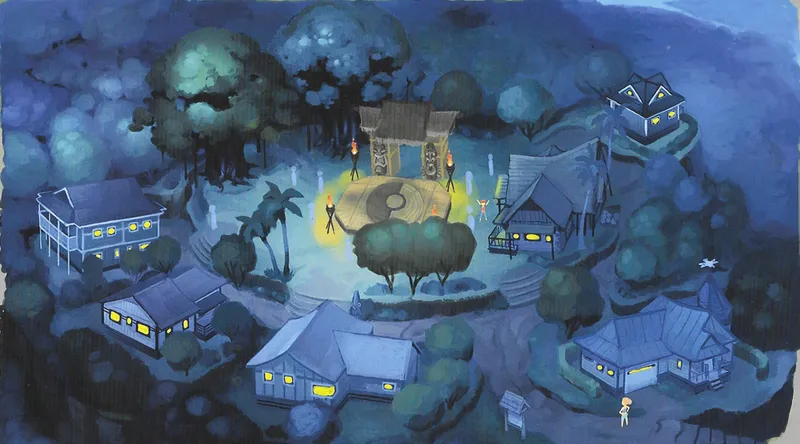
Un pequeño pueblo en el centro de Melemele, al norte de la ruta 1.
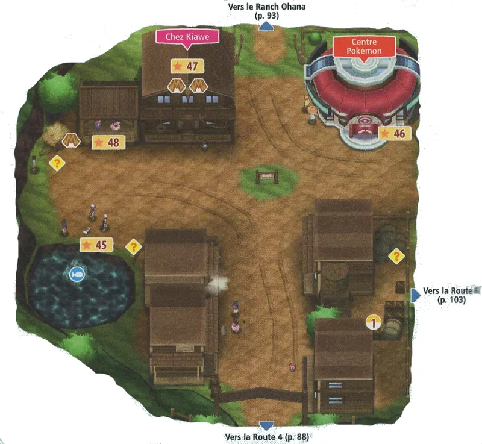
Un pueblo tranquilo en el centro de Akala.
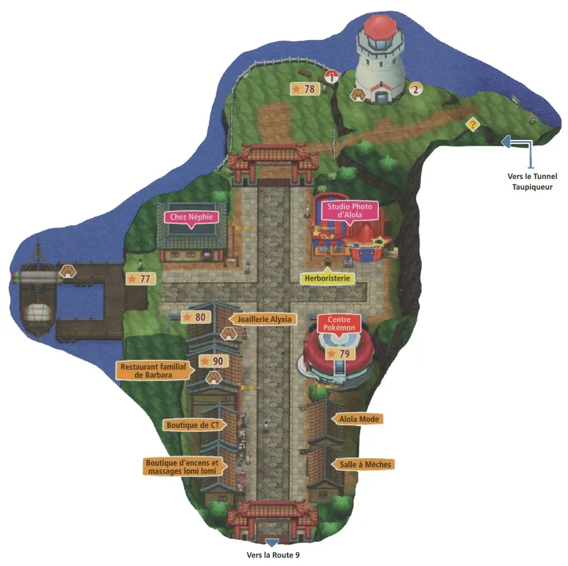
Una ciudad turística de Akala, con un mercado donde se vende de todo.
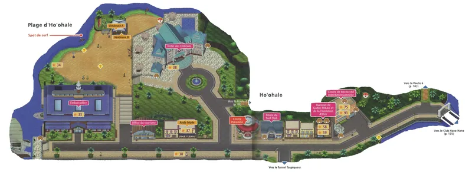
Una ciudad en el centro-oeste de Akala, junto al mar.
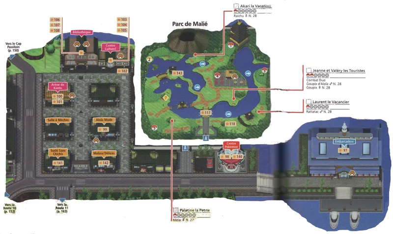
Una ciudad de Ula-Ula con un puerto muy activo. Hay un jardín y una biblioteca.
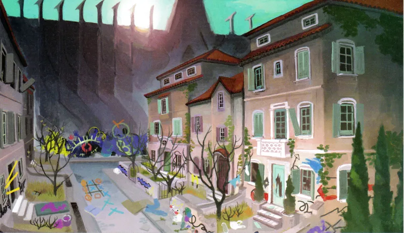
Un pueblo de la isla Ula-Ula. En él está la base del Equipo Skull.
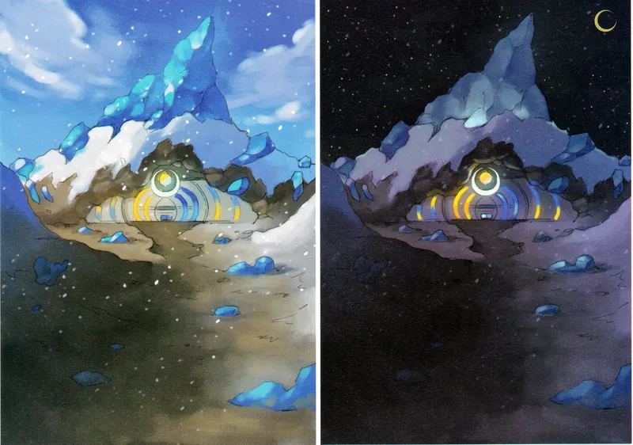
La montaña más alta de Alola, un lugar sagrado. En la cima está la Liga Pokémon.
Aquí está la Liga Pokémon
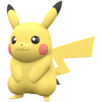
 Supermercado abandonado: Un supermercado cerrado de la isla Ula-Ula. Dicen que dentro vive un Pikachu un poco raro...
Supermercado abandonado: Un supermercado cerrado de la isla Ula-Ula. Dicen que dentro vive un Pikachu un poco raro...
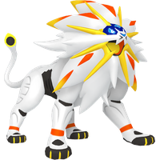
Psíquico Acero
El Pokémon que devora el sol. Es el legendario de Sol.
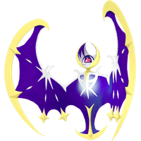
Psíquico Fantasma
El Pokémon que llama a la luna. Es el legendario de Luna.
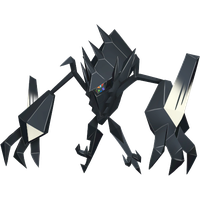
Psíquico
Un Pokémon que llegó del espacio y que roba luz. Aparece en Ultrasol y Ultraluna.
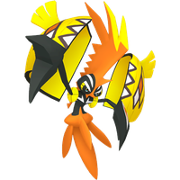
Eléctrico Hada
El guardián de Melemele. Es juguetón e impulsivo.
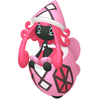
Psíquico Hada
El guardián de Akala. Es alegre y caprichoso.
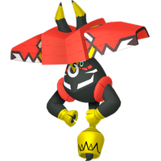
Planta Hada
El guardián de Ula-Ula. Es tranquilo y muy fuerte.
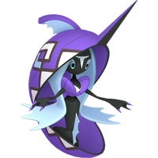
Agua Hada
El guardián de Poni. Es muy dulce y purifica el agua.
El Equipo Skull es una banda de jóvenes rebeldes que roban Pokémon y se meten con los demás. Visten con ropa suelta, cadenas y collares, y su base está en el Pueblo Po.
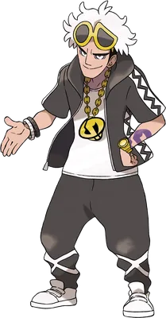
Líder del Equipo Skull
Conoce al profesor Kukui desde pequeño. Trata a todo su equipo como si fuese su familia y le gustan los Pokémon de tipo Bicho.
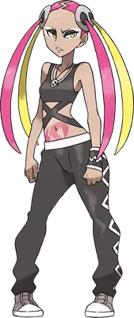
Comandante del Equipo Skull. Los reclutas la ven como una hermana mayor.
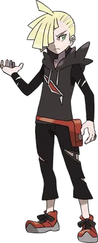
Cómplice del Equipo Skull. Trabaja con el equipo para ayudar a su amigo, Código Cero.
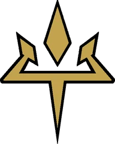
La Fundación Æther parece una organización amable que protege Pokémon, pero su presidenta tiene un plan peligroso: abrir una puerta a otra dimensión con ayuda de un Pokémon misterioso.
Sus miembros visten trajes blancos con detalles dorados, y su sede es una isla artificial: el Paraíso Æther.
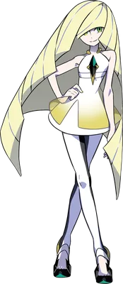
Presidenta de la Fundación Æther
La madre de Lylia y Gladio. Es muy elegante y está obsesionada con una criatura de otra dimensión.
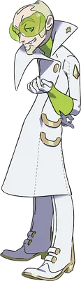
Director de la Fundación Æther. Es muy leal a Samina y le obedece sin dudar.
En Alola no hay gimnasios. En cada isla hay un kahuna, que es el entrenador más importante de la isla, y se le vence después de superar las pruebas.
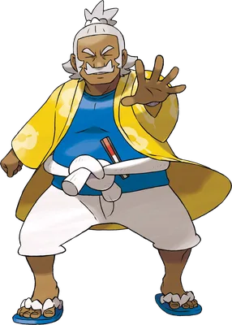
Isla Melemele
Lucha · Kahuna de Melemele
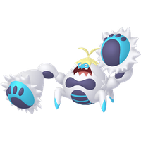
Pokémon estrellaCrabominable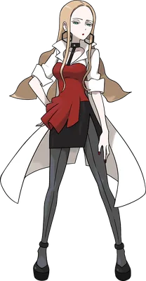
Isla Akala
Roca · Kahuna de Akala
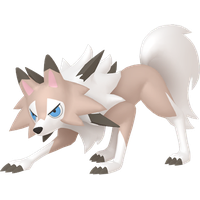
Pokémon estrellaLycanroc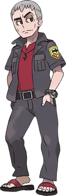
Isla Ula-Ula
Siniestro · Kahuna de Ula-Ula
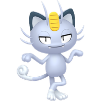
Pokémon estrellaPersian de Alola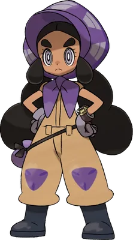
Isla Poni
Tierra · Kahuna de Poni
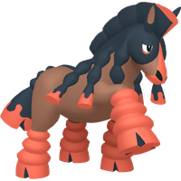
Pokémon estrellaMudsdaleLa Liga Pokémon de Alola es nueva y está en la cima del Monte Lanakila. Hay que tener superados a los kahunas. Primero se vence al Alto Mando y, por último, al Campeón.
Alto Mando
Lucha
Alto Mando
Roca
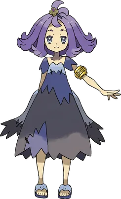
Alto Mando
Fantasma
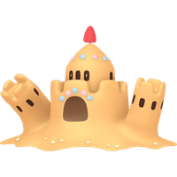
Pokémon estrellaPalossand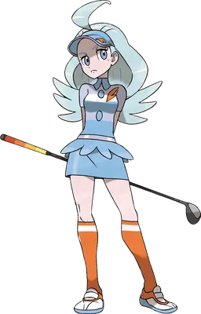
Alto Mando
Volador
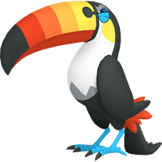
Pokémon estrellaToucannon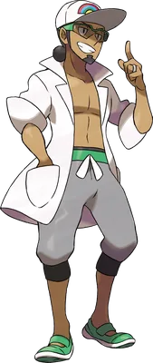
Campeón de la Liga
El profesor que creó la Liga. En Sol y Luna es el último rival del Alto Mando y, si lo vences, el protagonista se convierte en el primer campeón de Alola.
Investiga los movimientos Pokémon. Es amable, vive en una casa cerca de la playa y te da tu primer Pokémon.
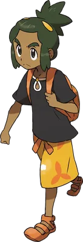
Tu amigo de la infancia y rival. Es alegre y simpático, y siempre te anima en el viaje. Su nombre en inglés es Hau.
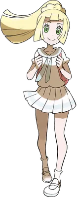
Una chica tímida que huye con un Pokémon misterioso, Cosmog, al que protege. Es la hija de la presidenta de la Fundación Æther.